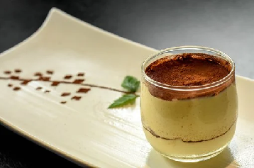
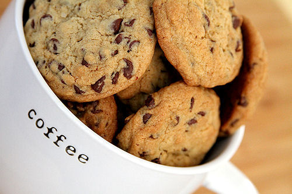
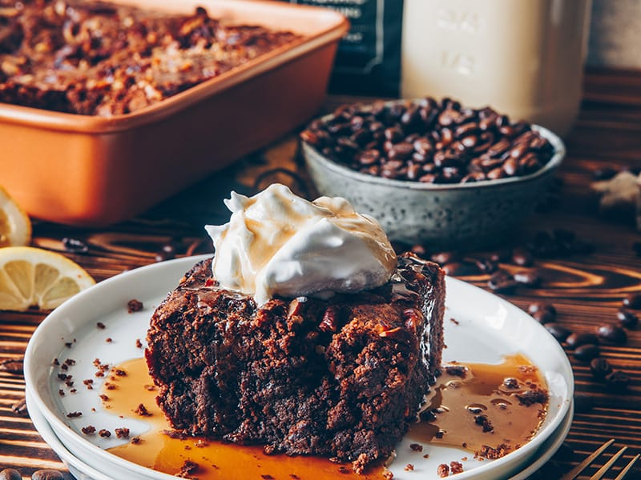

Sok szeretettel köszöntünk a honlapon! Itt megismerkedhet a kávé kínálatunkal!
Süteményfajták

☕ tiramisu
A Veneto tartománybeli Trevisóban 1969 decemberében a Le Beccehrie étterem tulajdonosa, Ado Campeol
(1928–2021) feleségével, Alba di Pillo-val és Roberto Linguanottodas séffel alkotta meg az első
tiramisut. [1] Az étterem étlapján 1972-ben jelent meg először.[2][3]
☕ káves-muffin
A muffin (kiejtése IPA: /'mʌfɪn/) egy süteményfajta, melynek két fő változata az angol és az
amerikai muffin. Legtöbbször kifejezetten erre a célra gyártott és vajjal vagy növényi zsiradékkal
kikent muffinsütőben sütik meg.

☕kávés keksz
A kekszek, a sütemények, a csokoládé és a cukrászáruk története az emberiséggel egyidős. Az ősember
mézzel és édes gyümölcsökkel elégítette ki az édes íz iránti természetes igényét. A civilizációk
kialakulásakor ugyancsak a méz és a gyümölcsök voltak az édességek fő alapanyagai, amelyeket
különböző formában fogyasztottak az egyiptomi, arab, kínai, görög és római kultúrákban. Később ezek
az egyre változatosabb receptek szerint készültek, és szerves részeivé váltak a vallásos
szertartásoknak és az ünnepi alkalmaknak.

☕kávés brownie
A brownie-t általában desszertként tálalják, néha forró tejjel vagy fagylalttal, ritkábban
tejszínhabbal. A fagylaltos brownie-ra használják még a brownie à la mode megnevezést is az Amerikai
Egyesült Államokban. Európában a házi browniekészítés nem jellemző, de például a Starbucks és a
McDonald’s forgalmaz kész brownie-t az európai kontinensen. Hollandiában kendervirágzatot tartalmazó
brownie is kapható kereskedelmi forgalomban space brownie néven.